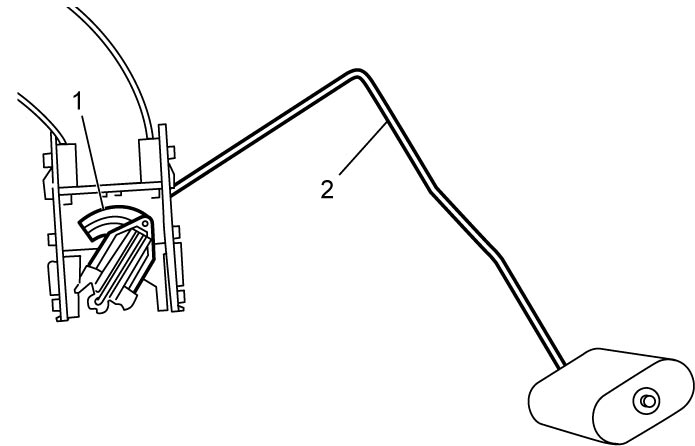
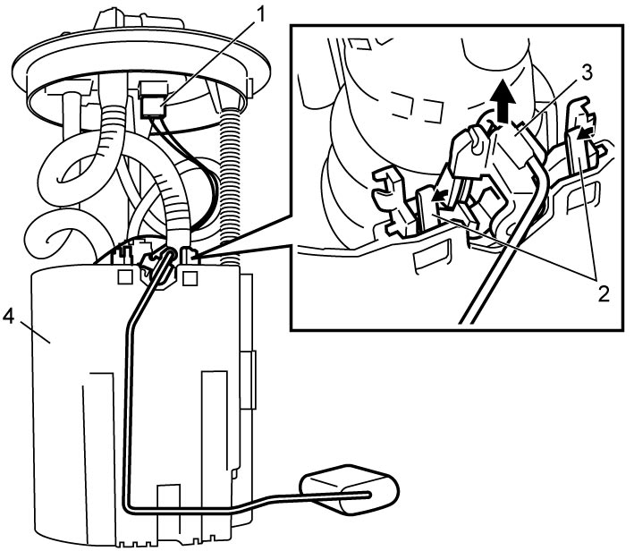

1G
| Fuel Level Sensor Removal and Installation |
NOTICE:
Failure to take proper precautions when removing or installing the fuel level sensor can result in damage.
To prevent failure of the fuel level sensor, be careful not to touch the resistor plate (1) or deforming the arm (2) when performing the service operations described below.

 "Expand image")
Removal
1)Remove fuel pump assembly from fuel tank. 
2)Disconnect fuel level sensor connector (1).
3)Release lock (2), and remove fuel level sensor (3) from fuel pump (4) by sliding it in arrow direction as shown in figure.

 "Expand image")